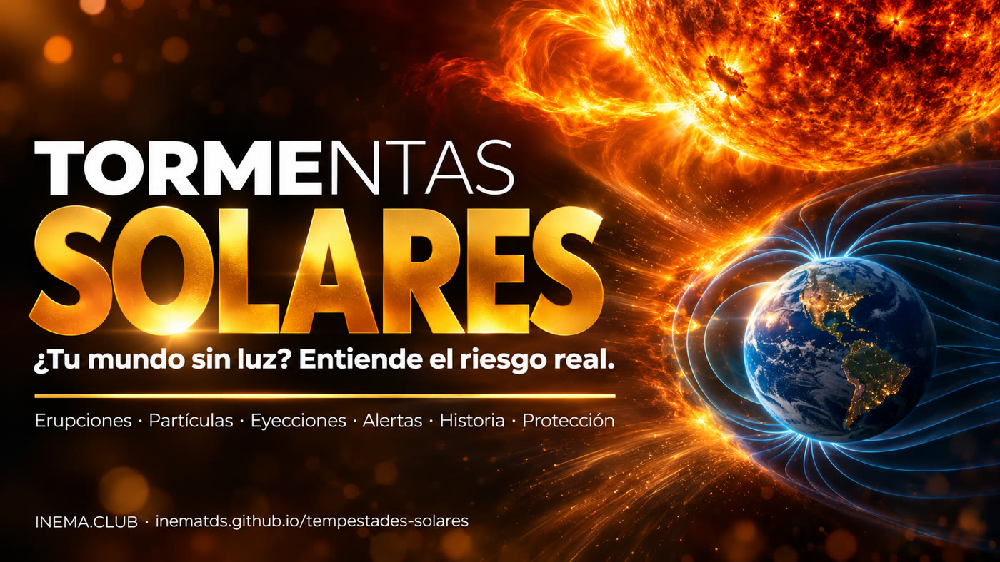
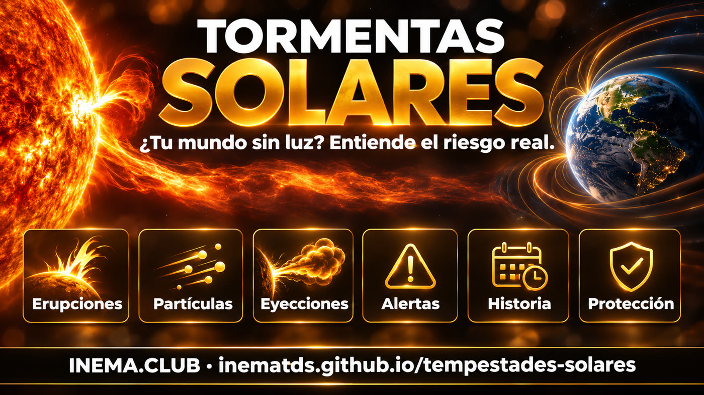
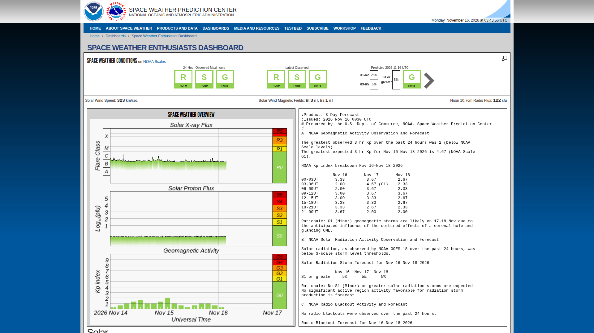

¿Una explosión solar puede derretir tus equipos y apagar el planeta?
1 min 42 s · audio y subtítulos en portugués
La llamada alarma. Entender el recorrido del Sol hasta tu enchufe te ayuda a reconocer exageraciones y prepararte.

Quedarse sin energía puede interrumpir el suministro de agua, las comunicaciones y los cuidados en el hogar. Este proyecto reúne videos educativos independientes de Nei para quienes quieren entender cómo la actividad solar afecta estos servicios. Aquí encontrarás explicaciones de los fenómenos, orientación para leer las alertas de la NOAA, la agencia estadounidense que monitorea los océanos, la atmósfera y el clima espacial, además de historia y preparación en el hogar. Solo tienes que mirar o leer; los guiones y las fuentes están disponibles. Los títulos plantean preguntas hipotéticas, sin predecir un apagón mundial ni anunciar una fecha.

Cada video funciona por sí solo. Los dos más cortos también tienen versión vertical. Los videos están en portugués; esta página se puede leer en tres idiomas.
1 min 42 s · audio y subtítulos en portugués
2 min 07 s · audio y subtítulos en portugués
8 min 11 s · audio y subtítulos en portugués
Los distintos fenómenos tienen diferentes tiempos de llegada e impactos. Consulta las explicaciones oficiales de la NOAA.
Liberación rápida de energía magnética. Los rayos X y la radiación ultravioleta alteran la ionosfera, una región eléctricamente cargada de la alta atmósfera, y pueden afectar las comunicaciones por radio en el lado iluminado de la Tierra. La luz tarda unos 8 minutos en llegar hasta aquí.
Los protones acelerados pueden llegar en decenas de minutos o menos. El riesgo de radiación aumenta para los satélites y astronautas; la atmósfera protege a quienes están en el suelo.
Una nube de plasma, materia con partículas eléctricamente cargadas, y un campo magnético salen del Sol. Si se dirigen hacia la Tierra, pueden perturbar la magnetosfera, la región dominada por el campo magnético terrestre. Las más rápidas llegan en unas 15–18 horas; otras tardan días.
Los agujeros coronales son regiones de campo abierto que liberan viento solar rápido. También pueden contribuir a las tormentas geomagnéticas, incluso sin una gran erupción.
El calentamiento de grandes transformadores es un mecanismo real. Esto no demuestra que todos los aparatos de una casa se derretirían. El servicio puede interrumpirse con tus equipos intactos. La intensidad, la duración, la ubicación y la vulnerabilidad de la red cambian el resultado.
Interrupciones de radio asociadas a erupciones solares.
Tormentas de partículas energéticas solares.
Perturbaciones del entorno magnético terrestre.
Las tres escalas van del 1 al 5. G5 es la categoría geomagnética extrema; no es una previsión automática de un apagón mundial. Las clases A, B, C, M y X describen el pico de rayos X de las erupciones y constituyen otra clasificación.
Escalas de la NOAA · Tipos de aviso · Erupciones en SpaceWeatherLive

Los telégrafos se vieron afectados y hubo auroras inusuales. No existía una red eléctrica como la actual para medir el efecto en los aparatos de hoy.
Una tormenta geomagnética provocó un apagón: un ejemplo de impacto real en una red moderna.
La tormenta de mayo produjo auroras y efectos tecnológicos generalizados, sin un apagón mundial.
La NOAA, agencia de Estados Unidos responsable del monitoreo oceánico y atmosférico, indica unas cuatro ocurrencias G5 por ciclo de 11 años en su tabla histórica. Esto no equivale a cuatro eventos de Carrington ni a cuatro colapsos globales. No existe un porcentaje universal de apagón mundial: la estimación depende del evento, del período y del impacto definido.
USGS — comparación histórica · NOAA — frecuencia de las escalas
Ten una linterna, una batería externa cargada y los contactos anotados. Acuerda con tu familia un punto de encuentro y una forma de comunicarse.
Planifica el agua, los alimentos que no necesiten refrigeración, los medicamentos y copias de los documentos importantes.
Planifica con antelación una fuente de energía de reserva y un lugar de apoyo para quienes dependen de equipos médicos.
Sigue a la empresa distribuidora y a Protección Civil. No improvises una toma de tierra ni abras el cuadro eléctrico por noticias de una tormenta solar.
Los generadores deben funcionar fuera de casa y lejos de puertas y ventanas debido al monóxido de carbono. Un protector de enchufe no garantiza protección contra todos los riesgos. La infraestructura requiere planes de operadores e ingenieros.
No necesitas esta parte para entender las explicaciones anteriores.
Todos los videos y subtítulos Guiones y referencias
El repositorio reúne las ilustraciones, las capturas reales de los paneles, los guiones completos y los scripts históricos de producción. Los scripts dependen del entorno INEMA y no son un instalador portátil. Los videos grandes están en los Releases; el manifiesto registra el tamaño y SHA-256 para comprobar la integridad.
Imágenes: NOAA/SWPC; animaciones científicas: NASA Goddard, Bailee DesRocher y Walt Feimer. Portadas e ilustraciones de las escenas generadas con image_gen mediante la suscripción a Codex. Música: Star walk, szegvari, CC0. Los créditos detallados y las condiciones de reutilización de las fuentes están en el repositorio; las imágenes y los medios de terceros conservan sus propias condiciones.